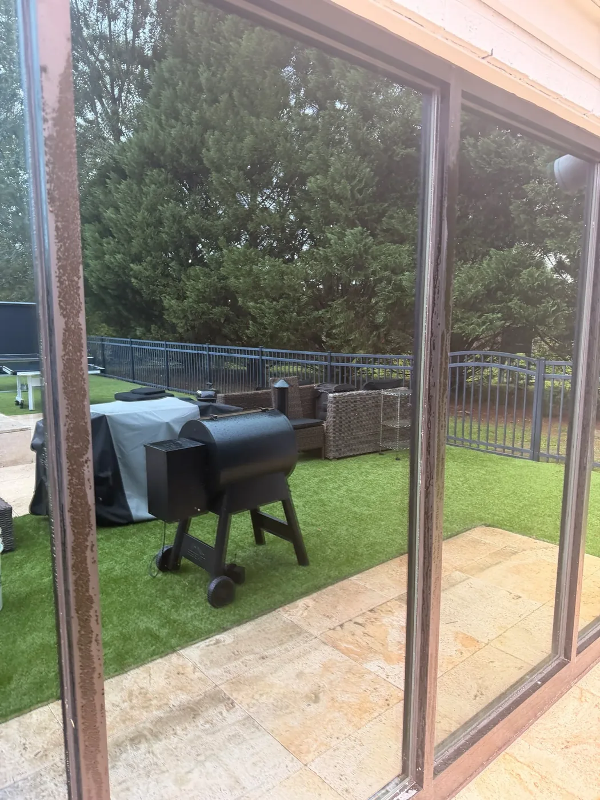
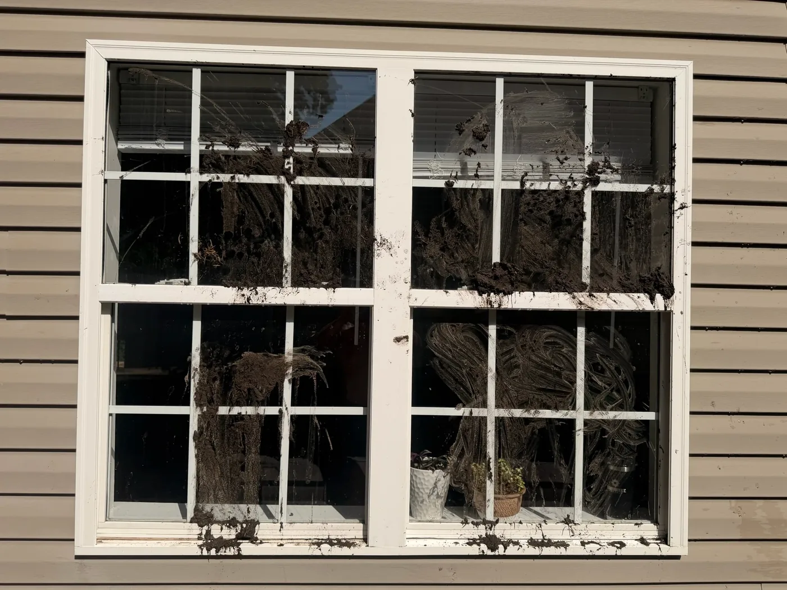
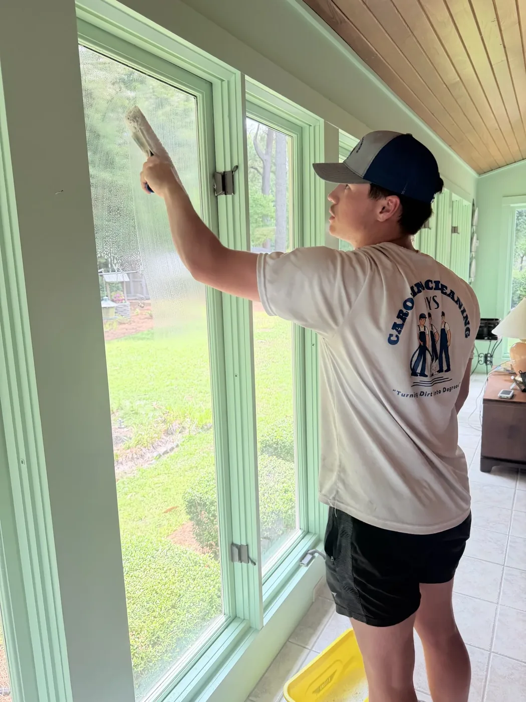
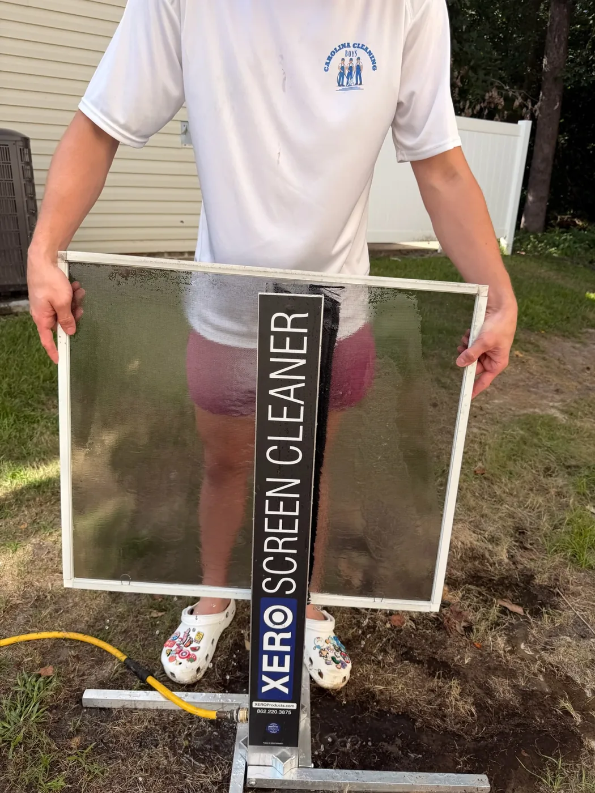

Exterior Glass, Every Time
Every window we touch gets a spot-free exterior finish - no soap film, no streaks, no squeegee lines left behind
Fill out the form below and we'll get back to you within 24 hours
A complete window service, not just a quick wipe of the glass

Every window we touch gets a spot-free exterior finish - no soap film, no streaks, no squeegee lines left behind

We wipe down the white trim around every window we clean, grids between the panes included - most companies clean the glass and leave the rest, which is exactly what you notice looking in from outside

Want the inside done too? Just let us know when you book and we'll cover interior glass along with the exterior

Storm windows, screens removed/washed/dried/reinstalled, glass doors, skylights, hard water spot removal, paint & overspray removal, and deep track & sill detail - every track, sill, corner and edge scrubbed out
Good to know: tracks & sills are extra
A standard window cleaning covers the glass and the white trim around each window, including the grids between the panes. Tracks and sills are an add-on. To get them truly clean we raise each window, scrub by hand underneath where the window and screen rest on the sill, and sometimes work from a ladder. That’s a lot more labor, so it’s quoted separately as deep track & sill detail. Just ask for it when you book.
The same crew that already washes your house, driveway, roof and gutters now does your windows too
Add windows to any pressure washing, soft-washing, roof or gutter job and it's handled in the same visit - one company, one invoice, one person to call.
Cleaning the outside of a house means the whole outside - not glass from one company and siding, roof or gutters from another. We see the whole exterior at once.
Got questions? We've got answers.
Window cleaning typically runs between $100-$500 depending on how many windows you have, how many stories, and whether you want the interior glass done along with the exterior. Screens, storm windows, and deep track detail are priced on top of that. We give you a free, no-obligation estimate so you know the exact number before we start.
Twice a year keeps most homes looking sharp, and there's no wrong month to start. Spring coats the glass in pollen, summer storms leave spots behind, and the low winter sun lights up every streak that was invisible in July. If it's been more than a year, you'll see the difference the same day.
A standard cleaning covers the exterior glass, plus interior glass if you want it, and the white trim around every window we touch, including the grids between the panes. Tracks and sills are an add-on (deep track & sill detail): getting them clean means raising each window and scrubbing underneath by hand, sometimes from a ladder. Specialty work like storm windows, screens (removed, washed, dried and reinstalled), glass doors, skylights, hard water spot removal, and paint or overspray removal is available too.
No. We run water through a four-stage filtration system - a carbon filter, two reverse osmosis filters, and a deionizing filter - before it ever touches the glass. That strips out the dissolved minerals that cause spotting, so the water dries completely clean. No spots, no streaks, no squeegee lines, and nothing runs down your siding or into the landscaping below. Outside, we work from the ground with a water-fed pole, so there are no ladders leaning against your gutters or siding. Inside, we do it the traditional way, by hand with a mop and squeegee.
Yes - that's actually how most of our customers do it. We're one crew that already handles the house wash, driveway, roof and gutters, so adding windows means one visit, one invoice, and one company to call instead of juggling a separate window cleaner.
210 five-star reviews from homeowners across Eastern NC who trust us with their whole exterior, windows included.
Pure water means no soap, no chemicals, and no runoff soaking your landscaping, siding, or the deck below.
Traditional cleaning leaves a thin film that attracts dust. Pure water leaves nothing behind for dust to stick to.
Started by ECU students right here in Eastern NC. You get a text back, not a call center.